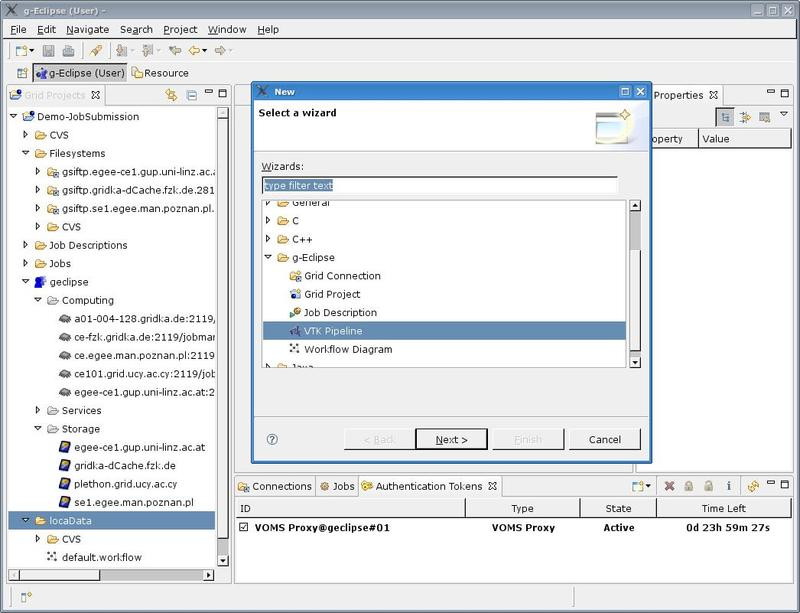
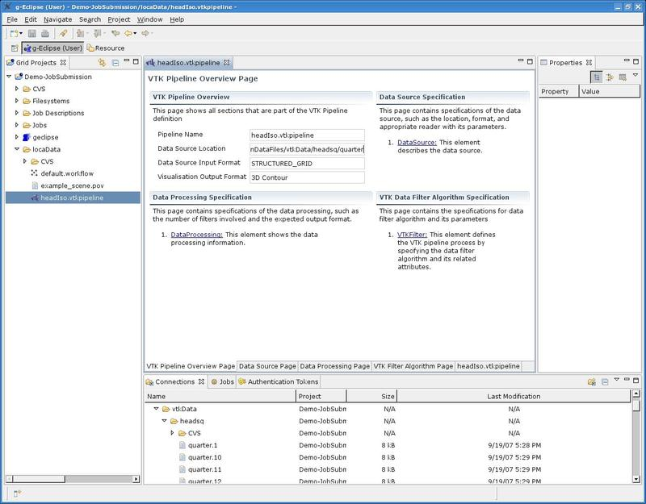

This page describes the VTK Pipeline wizard. Note that this work is in progress and more information is being added periodically.
Prerequisites: Have a g-Eclipse Grid Project created. Refer to Create a new Grid Project
Step 1: Righ-click on the g-Eclipse Project in the project explorer view and navigate to the VTK Pipeline creation wizard by selecting New > Other > g-Eclipse > VTK Pipeline. The wizard is shown in the picture below.  Figure 1: Selecting the VTK Pipeline wizard. Clicking Next and you will be taken to a wizard that will help you create a VTK Pipeline file and let you define some initial settings for the pipeline.
Step 2: On the first page of the wizard, select the location where your file will be saved and type in the name of the file with .vtkpipeline extension. Then click Next.
Step 3: On the second and last page of this wizard, you are asked to enter some more information.
This completes the creation of the VTK Pipeline file. This file will appear in the project explorer under the location you specified within your g-Eclipse project. Also the VTK Pipeline editor will open up, as show on the image below, In this editor you will be able to specify the pipeline further.  Figure 2: Overview Page of the VTK Pipeline editor. The use of this editor is explained here.